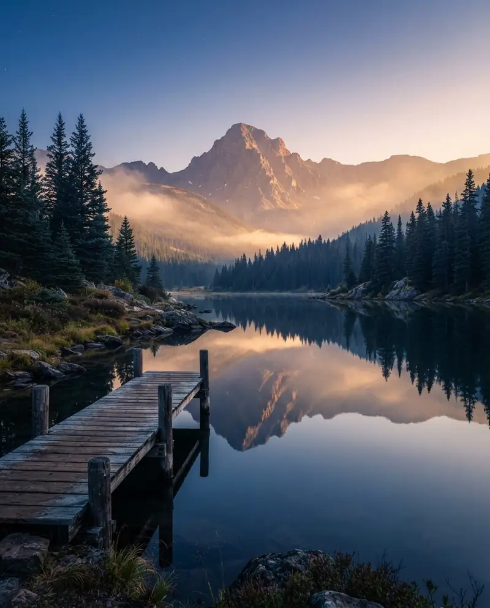
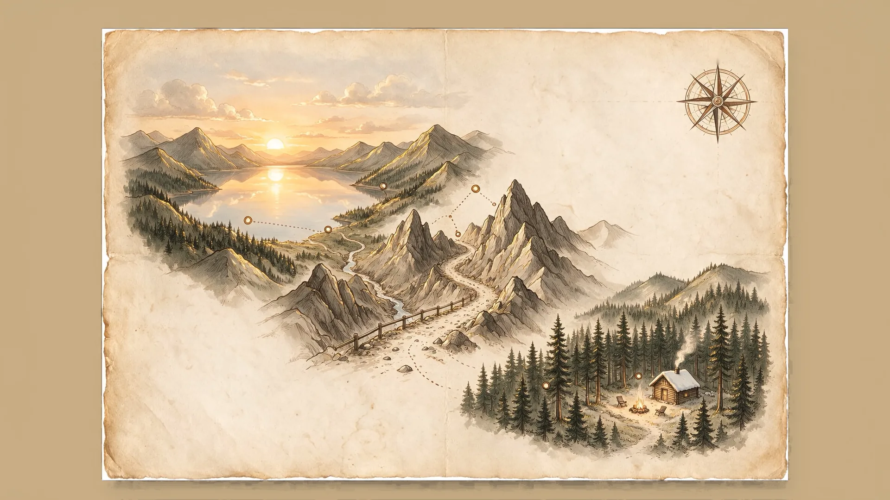
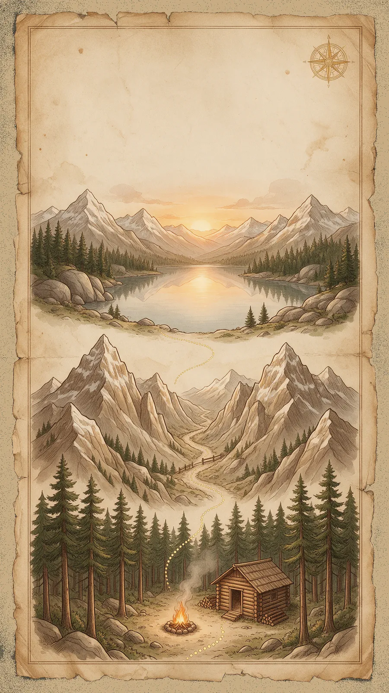
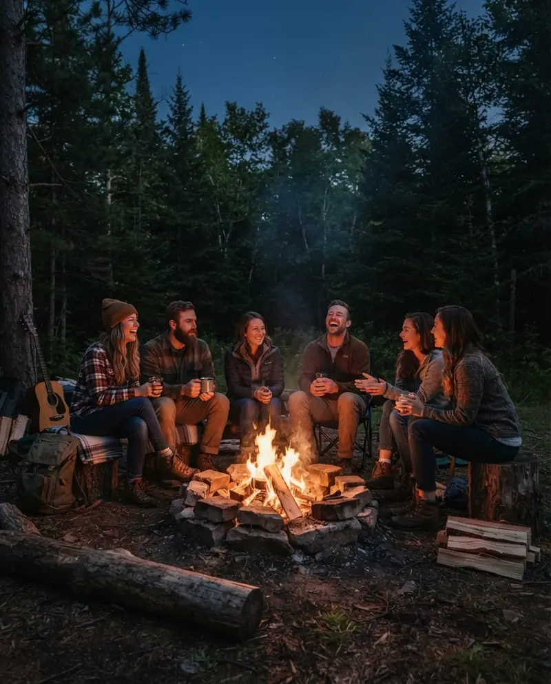
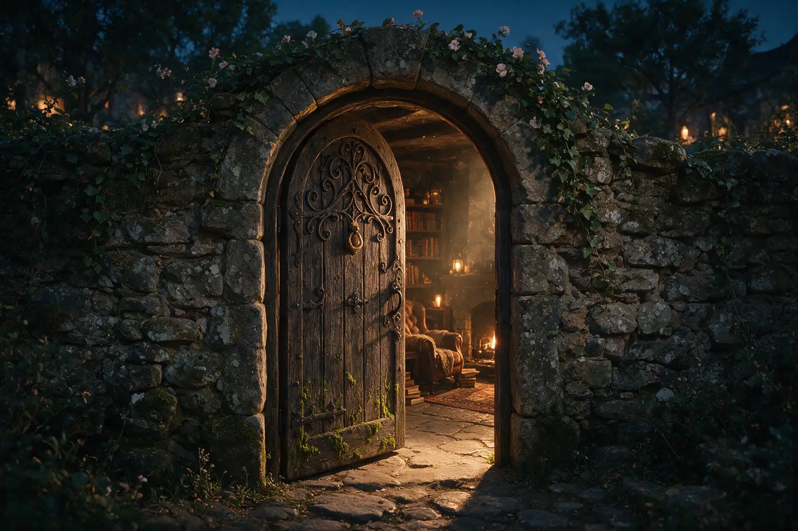
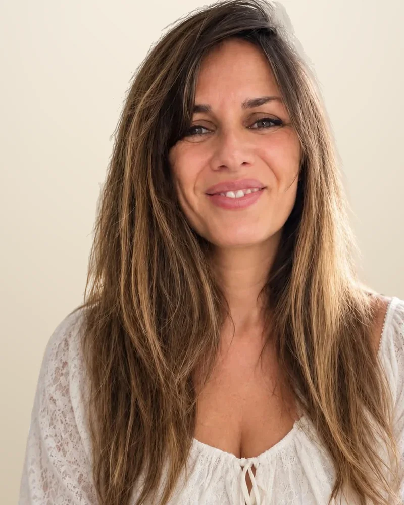

Territorio
SER
Descubrir quién eres
Aquí comienza la exploración: mirar hacia dentro antes de mover nada fuera.
- 01El Espejo
- 02La Llamada
Campamento base · Murcia · 37°59′N 1°08′W
Expedición 01 · 14–15 nov · plazas limitadas

01 Territorio SER01 · El EspejoMirarte para reconocerte¿Quién soy cuando dejo de ser lo que los demás esperan de mí?Abierta · becada 02 Territorio SER02 · La LlamadaElegir quién quieres ser¿Qué quiere empezar a despertar en mí?Próximamente 03 Territorio HACER03 · El PasoDecidir y actuar¿Qué decisión estoy evitando tomar?Próximamente 04 Territorio TENER04 · Los CimientosLa vida que sostienes¿Sobre qué estoy construyendo mi vida?Próximamente 05 Territorio TENER05 · Los VínculosLa vida que compartes¿Qué relaciones quiero construir y qué lugar quiero ocupar en ellas?Próximamente 06 Territorio TENER06 · La CelebraciónLa vida que reconoces¿Soy capaz de reconocer todo lo que ya he recorrido?Próximamente
01 Territorio SER01 · El EspejoMirarte para reconocerte¿Quién soy cuando dejo de ser lo que los demás esperan de mí?Abierta · becada 02 Territorio SER02 · La LlamadaElegir quién quieres ser¿Qué quiere empezar a despertar en mí?Próximamente 03 Territorio HACER03 · El PasoDecidir y actuar¿Qué decisión estoy evitando tomar?Próximamente 04 Territorio TENER04 · Los CimientosLa vida que sostienes¿Sobre qué estoy construyendo mi vida?Próximamente 05 Territorio TENER05 · Los VínculosLa vida que compartes¿Qué relaciones quiero construir y qué lugar quiero ocupar en ellas?Próximamente 06 Territorio TENER06 · La CelebraciónLa vida que reconoces¿Soy capaz de reconocer todo lo que ya he recorrido?PróximamentePasa el cursor por cada estación para leer su pregunta ·
El camino YUAP
YUAP es un recorrido experiencial pensado para explorar las distintas dimensiones de tu vida.
Durante el camino atravesarás tres grandes territorios y vivirás seis expediciones. Cada una te lleva a un lugar diferente de tu mapa interior.
No es un curso ni una charla. Es un viaje presencial, en grupo reducido, que se vive con el cuerpo, la emoción y la decisión.
3 territorios
Antes de cambiar lo que haces o lo que tienes, necesitas detenerte y mirar hacia dentro. Por eso el recorrido tiene un orden: primero descubres, luego actúas y después construyes.

Territorio
Descubrir quién eres
Aquí comienza la exploración: mirar hacia dentro antes de mover nada fuera.
Territorio
Convertir lo que descubres en acción
Saber quién eres no basta. El mapa solo cambia cuando decides caminar.

Territorio
Construir la vida que quieres habitar
No hablamos de tener más, sino de tener una vida que tenga sentido para ti.
Las 6 estaciones
Cada estación del mapa es una expedición presencial con su propia pregunta del explorador. Cuando completas las seis, tu mapa ha cambiado: no porque alguien haya dibujado el camino por ti, sino porque tú has recorrido cada coordenada.
Territorio SER
Mirarte para reconocerte
¿Quién soy cuando dejo de ser lo que los demás esperan de mí?
Territorio SER
Elegir quién quieres ser
¿Qué quiere empezar a despertar en mí?
Territorio HACER
Decidir y actuar
¿Qué decisión estoy evitando tomar?
Territorio TENER
La vida que sostienes
¿Sobre qué estoy construyendo mi vida?
Territorio TENER
La vida que compartes
¿Qué relaciones quiero construir y qué lugar quiero ocupar en ellas?
Territorio TENER
La vida que reconoces
¿Soy capaz de reconocer todo lo que ya he recorrido?
¿Te atreves a descubrir dónde estás en tu mapa?
Comenzar el viaje
La experiencia inmersiva
Cada expedición es una vivencia presencial: dinámicas, retos y conversaciones que te sacan del papel de espectador. Sales con algo decidido, no con apuntes.
Un espacio cuidado para vivir cada estación con otras personas que también están en camino.
Un documento físico que recibes en el primer taller y donde vas sellando cada estación de tu mapa.
Antes de cruzar la primera puerta, todo el grupo hace el mismo compromiso.
El Pacto del Explorador
Antes de cruzar la primera puerta, todos los exploradores hacemos el mismo compromiso. Son siete acuerdos sencillos que protegen el viaje de cada persona.
Decido recorrer el Camino YUAP con honestidad, respeto y compromiso, y recordar que ninguna puerta puede abrirse sin mi decisión.
Primera edición
Tu viaje empieza en la Expedición 01 · El Espejo, becada para quienes se inscriben en esta primera edición.
Las plazas becadas son limitadas y se asignan por orden de inscripción. Reserva la tuya y te contamos por WhatsApp o email todos los detalles prácticos. Las siguientes estaciones se abrirán por orden.
El botón abre el formulario de solicitud de la beca en una pestaña nueva.
Credencial de expedición
Quién te acompaña
YUAP une el coaching ejecutivo de Maite y la pedagogía creativa de Carmen. Diseñan cada expedición para que lo vivas de tú a tú.
Coach ejecutiva · Cofundadora
Acompaña a personas y equipos directivos en procesos de desarrollo y cambio. [Bio breve de 2 líneas, pendiente de aprobar]

Pedagoga · Cofundadora
Diseña y facilita experiencias de aprendizaje a través de la creatividad y la educación emocional. Propone retos que invitan a experimentar, expresarse y explorar nuevas perspectivas.
6 expediciones · 3 territorios · 1 mapa · una transformación